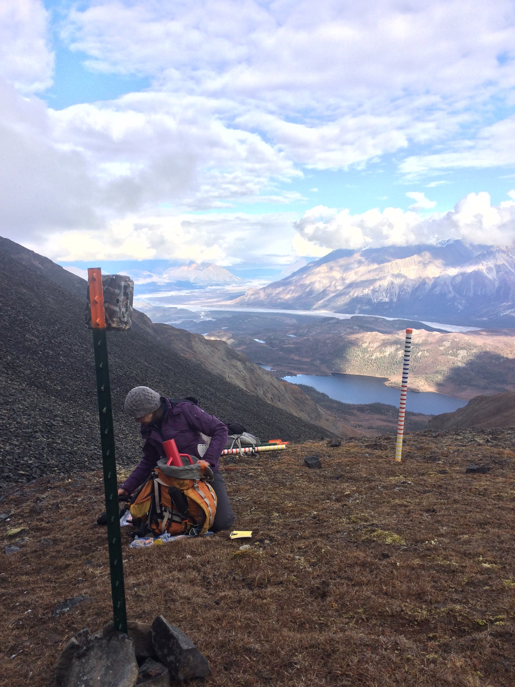

Video Credit: https://www.youtube.com/watch?v=KFdOjV2EQyE
Dall Sheep inhabit mountainous ranges of Northwestern Canada and Alaska. They are wild sheep and rely on alpine meadows for their forage, which varies according to summer to winter. Summer vegetation is abundant and a wide range of food sources are used by the sheep. However, in winter food is scarce and the sheep rely on windy, bare ridges where frozen grasses and sedge stems can be found with a little bit of scrabbling through the snow. Climate change though is challenging this food source. Warming events melt the snowpack and then refreeze, leaving ice layers that stop the sheep from accessing their food. My project uses a combintaion of a spatially explicity snow-evolution model, remote-sensing imagery and field observations to help us understand where these events happened historically, how they affected the success of the sheep, and how vulnerable they may be as a species in future decades. Below I will show some of the fieldwork we've already done in the Wrangell St Elias...
Dall Sheep Ranges
Our field work takes place in the Wrangell St Elias National Park - the US's largest national park at 13.2 million acres. We can't cover all that ground though, so we focus on taking measurements in one park unit, Jacksina Creek.
Wrangell St Elias NP
Sheep Survey Units
Jacksina Creek
In September 2016 we set out 22 Reconyx PC900 cameras pointing at a marked snow stake in locations on Jaeger Mesa and near Nabesna Village. The cameras (see photo below) take a photo every 1hr throughout the winter, showing the evolution of snowdepth up and down the stake in front of them and take the odd snap of Dall Sheep nearby. The locations for the cameras were chosen to best represent the different altitudes, aspects, slope angles and vegetation present in the area.
After a winter of freezing temperatures and some snow we returned to the Wrangells to collect the memory cards from the cameras and conduct snow surveys nearby. March is generally the month in which the peak amount of snow is seen in the year and its just before when the Dall Sheep begin to lamb; a critical period for them to be able to forage. We employed a number of methods to measure the snowpack; depth was taken by a combination of Magnaprobe and manual measurements along transects and spirals, density measurements and analysis of stratigraphy were taken at snowpits dug nearby each camera.
Here the orange points are snow depth measurements taken by a Magnaprobe